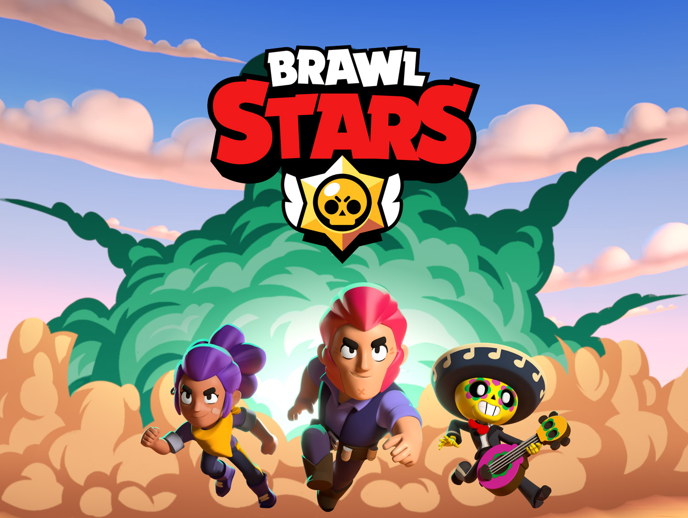

Supercell
Zoals wij al eerder benoemd hebben is het Finse bedrijf ''Supercell'' de ontwikkelaar van de video game Clash Royale. Het bedrijf Supercell bestaat al sinds 2010, en is in 2011 begonnen met de ontwikkeling van video games.
Waar ligt Supercell?
Het hoofdkantoor van Supercell ligt gelegen in Helsinki, Finland op het excate adres: Jätkäsaarenlaituri 1, 00180 Helsinki, Finland. Het Supercell hoofdkantoor in Finland is het "main" kantoor en de Game Studio. Supercell heeft meerdere kantoren over de hele wereld. De eerste staat in San Francisco, USA, Dit kantoor is ook gespecialiseerd in games maken vandaar dat het ook een Game Studio is, ook houden hun zich bezig met de Marketing. Het zelfde gaat voor het kantoor in Shanghai, China. Dit is ook een Game Studio en houdt zich bezig met marketing. Het laatste kantoor ligt in Seoul, Korea. In Korea houdt Supercell zich alleen bezig met marketing. Hieronder staan een paar foto's van hoe het hoofdkantoor in Finland eruit ziet.


Games
Op onze site praten wij natuurlijk alleen over de game Clash Royale, maar Supercell heeft ook veel andere populaire games gemaakt. Denk hierbij aan: Clash of Clans, Boom Beach, Brawl Stars en Hay Day. Clash of Clans was de eerste mobiele game van Supercell die online stond en ook erg groot is geworden. Clash of Clans leverde meer dan 1 Miljard dollar op. Je kan wel zeker zeggen dat Clash Of Clans een groot succes was. Clash Royale is dus ook gebaseerd op Clash of Clans. Hay Day en Boom Beach zijn wat minder populair, Brawl Stars daar integen was ook een erg groot succes met een omzet van ook meer dan 1 miljard Dollar. Je kan dus wel zeggen dat Supercell goed is in games maken.
Oprichters
De Oprichters van Supercell zijn: Ikka Paananen (Linkerfoto) en Mikko Kodisoja (Rechterfoto), Mikko is geboren in 1976 en hij is nu 47 jaar oud. Ikka is geboren in 1978 en hij is nu 44 jaar oud. Supercell heeft ook verschillende mede-oprichters dit zijn: Niko Derome, Lassi Leppinen, Petri Styrman en Visa Forsten.